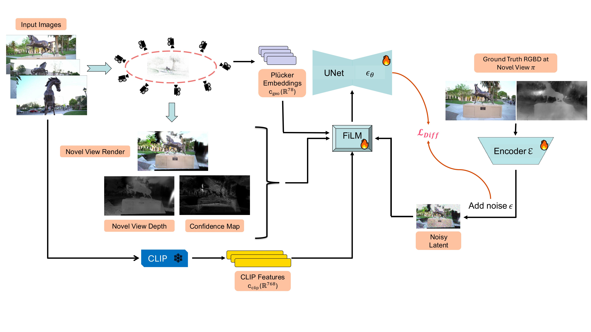
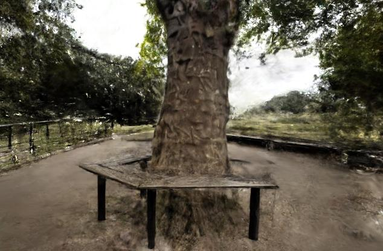
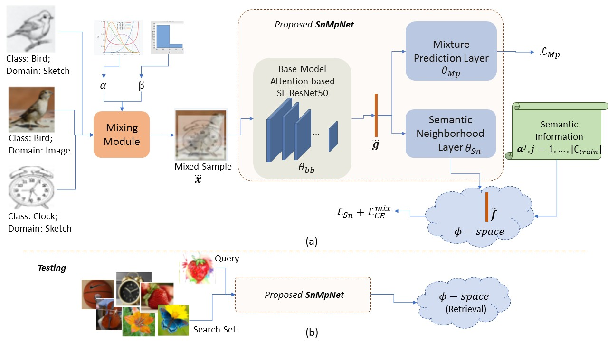
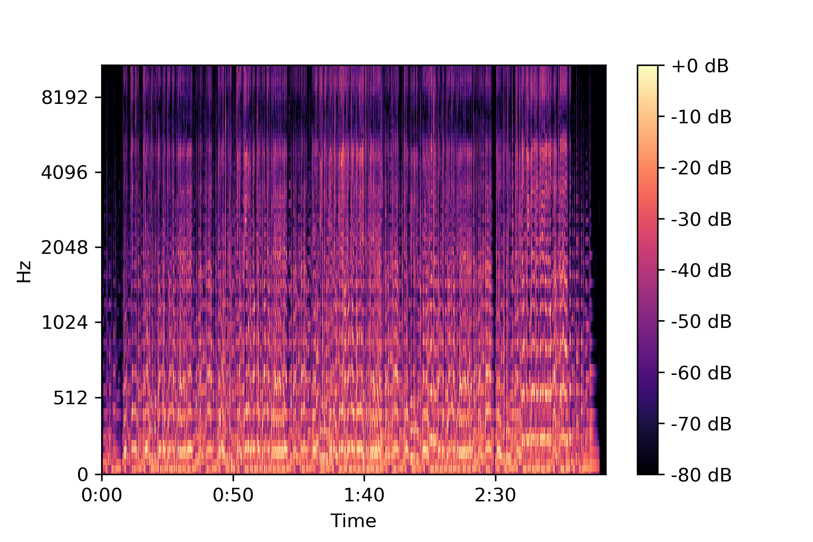
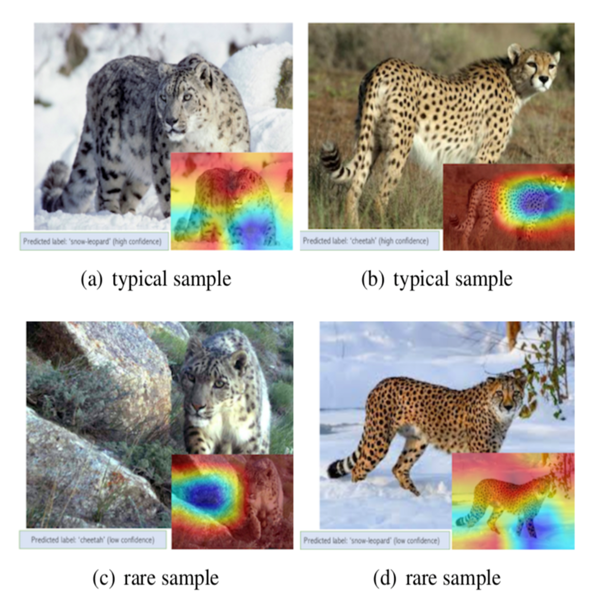
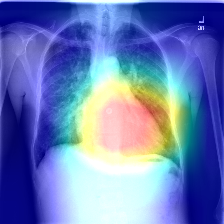
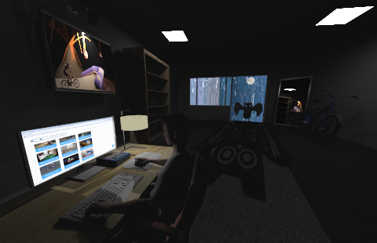
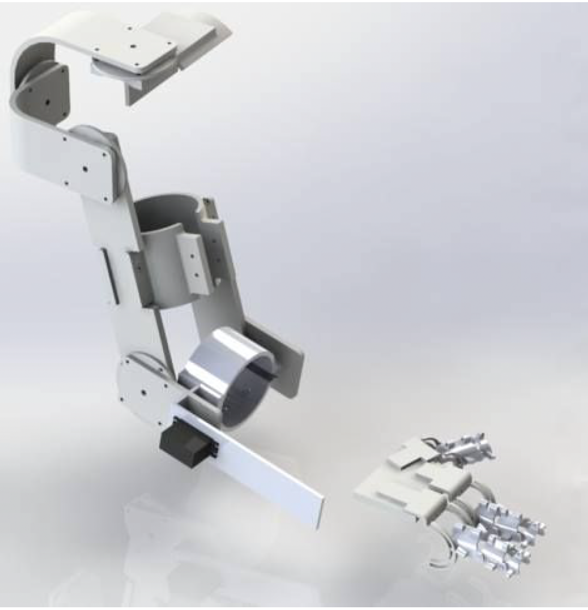

|
I am a first-year Ph.D. student in the CCVL group at Johns Hopkins University, advised by Bloomberg Distinguished Professor Alan Yuille. I completed my MSc. in Visual Computing at Universität des Saarlandes. My master thesis was on sparse-view 360° scene reconstruction using 2D diffusion priors, in Prof. Bernt Schiele's group at the Max-Planck-Institut für Informatik. During my master's, I interned in the Astra Vision Group at Inria Paris, where I worked on physics understanding of vision foundation models. Before moving to Europe, I was a data scientist at HP Inc India where I worked with Niranjan Damera Venkata on time series forecasting problems in finance. I have also spent time as a Research Fellow at Indian Institute of Science, Bangalore, working with Prof. Soma Biswas on problems at the intersection of cross-modal retrieval and domain generalization. Previously, I graduated from Indian Institute of Technology Kharagpur with a bachelor's degree in Electrical Engineering and a minor in Computer Science. I was advised by Prof. K. Sreenivasa Rao for my bachelor's thesis on singing voice detection. During my undergrad, I interned at IBM India Research Labs, Bangalore where I worked on novel zero-shot learning algorithms. |

|
|
|
I am interested in computer vision, specifically topics at the intersection of 3D reconstruction, metrics, parts, materials, generative modelling and physical reasoning. In earlier years, my research spanned topics in domain generalization, zero-shot learning, music information retrieval and medical imaging. Representative papers are highlighted. |
|
Alan Yuille arXiv 2026
abstract /
bibtex /
arXiv /
project page
Multiview 3D evaluation assumes that the images being scored are observations of one static 3D scene. This assumption can fail in NVS and sparse-view reconstruction: inputs or generated outputs may contain artifacts, outlier frames, repeated views, or noise, yet still receive high 3D consistency scores. Existing reference-based metrics require ground truth, while ground-truth-free metrics such as MEt3R depend on learned reconstruction backbones whose failure modes are poorly characterized. We study this reliability problem by comparing neural reconstruction priors with classical geometric verification. We introduce SysCON3D, a controlled robustness benchmark for multiview 3D consistency, and a parametric family that decomposes neural metrics into backbone, residual, and aggregation components. This family recovers MEt3R and yields variants up to 3× more robust. Our analysis shows that VGGT, MASt3R, DUSt3R, and Fast3R can hallucinate dense geometry and cross-view support for unrelated scenes, repeated images, and random noise. We introduce COLMAP-based metrics that use matches, registration, dense support, and reconstruction failure as failure-aware consistency signals. On real NVS outputs and a structured human study, these metrics achieve up to 4× higher correlation with human judgments than MEt3R.
@article{paul2026views,
title={Can These Views Be One Scene? Evaluating Multiview 3D Consistency when 3D Foundation Models Hallucinate},
author={Paul, Soumava and Kaushik, Prakhar and Yuille, Alan},
journal={arXiv preprint arXiv:2605.18754},
year={2026}
An automatic, ground-truth-free way to judge whether multi-view images are consistent with one 3D scene. |
|
Ankit Vaidya, Anand Bhattad, Alan Yuille CVPR 2026 Findings
abstract /
bibtex /
arXiv /
project page
We address semantic 3D part segmentation: decomposing objects into parts with meaningful names. While datasets exist with part annotations, their definitions are inconsistent across datasets, limiting robust training. Previous methods produce unlabeled decompositions or retrieve single parts without complete shape annotations. We propose ALIGN-Parts, which formulates part naming as a direct set alignment task. Our method decomposes shapes into partlets—implicit 3D part representations—matched to part descriptions via bipartite assignment. We combine geometric cues from 3D part fields, appearance from multi-view vision features, and semantic knowledge from language-model-generated affordance descriptions. Text-alignment loss ensures partlets share embedding space with text, enabling a theoretically open-vocabulary matching setup, given sufficient data. Our efficient and novel, one-shot, 3D part segmentation and naming method finds applications in several downstream tasks, including serving as a scalable annotation engine. As our model supports zero-shot matching to arbitrary descriptions and confidence-calibrated predictions for known categories, with human verification, we create a unified ontology that aligns PartNet, 3DCoMPaT++, and Find3D, consisting of 1,794 unique 3D parts. We also show examples from our newly created Tex-Parts dataset. We also introduce 2 novel metrics appropriate for the named 3D part segmentation task.
@article{paul2025name,
title={Name That Part: 3D Part Segmentation and Naming},
author={Paul, Soumava and Kaushik, Prakhar and Vaidya, Ankit and Bhattad, Anand and Yuille, Alan},
journal={arXiv preprint arXiv:2512.18003},
year={2025}
Set-level matching avoids part-count supervision and post-hoc clustering, making named part segmentation dramatically faster at inference. |
|
 |
Soumava Paul, Prakhar Kaushik, Alan Yuille TMLR 2025
abstract /
bibtex /
proceedings /
arXiv /
code /
project page /
video
In this work, we introduce a generative approach for \textit{pose-free} (without camera parameters) reconstruction of 360° scenes from a sparse set of 2D images. Pose-free scene reconstruction from incomplete, pose-free observations is usually regularized with depth estimation or 3D foundational priors. While recent advances have enabled sparse-view reconstruction of large complex scenes (with high degree of foreground and background detail) with known camera poses using view-conditioned generative priors, these methods cannot be directly adapted for the pose-free setting when ground-truth poses are not available during evaluation. To address this, we propose an image-to-image generative model designed to inpaint missing details and remove artifacts in novel view renders and depth maps of a 3D scene. We introduce context and geometry conditioning using Feature-wise Linear Modulation (FiLM) modulation layers as a lightweight alternative to cross-attention and also propose a novel confidence measure for 3D Gaussian splat representations to allow for better detection of these artifacts. By progressively integrating these novel views in a Gaussian-SLAM-inspired process, we achieve a multi-view-consistent 3D representation. Evaluations on the MipNeRF360 and DL3DV-10K benchmark dataset demonstrate that our method surpasses existing pose-free techniques and performs competitively with state-of-the-art \textit{posed} (precomputed camera parameters are given) reconstruction methods in complex 360° scenes.
@article{paul2024gaussian,
title={Gaussian Scenes: Pose-Free Sparse-View Scene Reconstruction using Depth-Enhanced Diffusion Priors},
author={Paul, Soumava and Kaushik, Prakhar and Yuille, Alan},
journal={arXiv preprint arXiv:2411.15966},
year={2024}
}
A generative solution for reconstructing 360° scenes from sparse unposed images. |
|
 |
Soumava Paul, Christopher Wewer, Bernt Schiele, Jan Eric Lenssen ECCV Wild3D 2024
abstract /
bibtex /
proceedings /
arXiv /
code
We aim to tackle sparse-view reconstruction of a 360° 3D scene using priors from latent diffusion models (LDM). The sparse-view setting is ill-posed and underconstrained, especially for scenes where the camera rotates 360 degrees around a point, as no visual information is available beyond some frontal views focused on the central object(s) of interest. In this work, we show that pretrained 2D diffusion models can strongly improve the reconstruction of a scene with low-cost fine-tuning. Specifically, we present SparseSplat360 (Sp2360), a method that employs a cascade of in-painting and artifact removal models to fill in missing details and clean novel views. Due to superior training and rendering speeds, we use an explicit scene representation in the form of 3D Gaussians over NeRF-based implicit representations. We propose an iterative update strategy to fuse generated pseudo novel views with existing 3D Gaussians fitted to the initial sparse inputs. As a result, we obtain a multi-view consistent scene representation with details coherent with the observed inputs. Our evaluation on the challenging Mip-NeRF360 dataset shows that our proposed 2D to 3D distillation algorithm considerably improves the performance of a regularized version of 3DGS adapted to a sparse-view setting and outperforms existing sparse-view reconstruction methods in 360° scene reconstruction. Qualitatively, our method generates entire 360° scenes from as few as 9 input views, with a high degree of foreground and background detail.
@inproceedings{
paul2024sp,
title={Sp2360: Sparse-view 360{\textopenbullet} Scene Reconstruction using Cascaded 2D Diffusion Priors},
author={Soumava Paul and Christopher Wewer and Bernt Schiele and Jan Eric Lenssen},
booktitle={ECCV 2024 Workshop on Wild 3D: 3D Modeling, Reconstruction, and Generation in the Wild},
year={2024},
url={https://openreview.net/forum?id=XuNhNyHHwK}
}
Synthesizing novel views with a combination of diffusion-based image inpainting and artifact removal priors helps reconstruct complex 360° scenes without 3D-aware finetuning of a 2D diffusion model on million-scale multiview datasets. |
|
 |
Soma Biswas ICCV 2021
abstract /
bibtex /
proceedings /
arXiv /
code / Video /
slides /
poster
In this work, for the first time, we address the problem of universal cross-domain retrieval, where the test data can belong to classes or domains which are unseen during training. Due to dynamically increasing number of categories and practical constraint of training on every possible domain, which requires large amounts of data, generalizing to both unseen classes and domains is important. Towards that goal, we propose SnMpNet (Semantic Neighbourhood and Mixture Prediction Network), which incorporates two novel losses to account for the unseen classes and domains encountered during testing. Specifically, we introduce a novel Semantic Neighborhood loss to bridge the knowledge gap between seen and unseen classes and ensure that the latent space embedding of the unseen classes is semantically meaningful with respect to its neighboring classes. We also introduce a mix-up based supervision at image-level as well as semantic-level of the data for training with the Mixture Prediction loss, which helps in efficient retrieval when the query belongs to an unseen domain. These losses are incorporated on the SE-ResNet50 backbone to obtain SnMpNet. Extensive experiments on two large-scale datasets, Sketchy Extended and DomainNet, and thorough comparisons with state-of-the-art justify the effectiveness of the proposed model.
@InProceedings{Paul_2021_ICCV,
author = {Paul, Soumava and Dutta, Titir and Biswas, Soma},
title = {Universal Cross-Domain Retrieval: Generalizing Across Classes and Domains},
booktitle = {Proceedings of the IEEE/CVF International Conference on Computer Vision (ICCV)},
month = {October},
year = {2021},
pages = {12056-12064}
}
Semantic domain-invariant learning of latent space embeddings prepares an image retrieval model for a challenging cross-domain retrieval scenario where test data can belong to classes or domains unseen during training. |
|
 |
Soumava Paul, Gurunath Reddy M, K. Sreenivasa Rao, PP Das INTERSPEECH 2021
abstract /
bibtex /
proceedings /
arXiv /
code /
Video /
slides
Singing Voice Detection (SVD) has been an active area of research in music information retrieval (MIR). Currently, two deep neural network-based methods, one based on CNN and the other on RNN, exist in literature that learn optimized features for the voice detection (VD) task and achieve state-of-the-art performance on common datasets. Both these models have a huge number of parameters (1.4M for CNN and 65.7K for RNN) and hence not suitable for deployment on devices like smartphones or embedded sensors with limited capacity in terms of memory and computation power. The most popular method to address this issue is known as knowledge distillation in deep learning literature (in addition to model compression) where a large pre-trained network known as the teacher is used to train a smaller student network. Given the wide applications of SVD in music information retrieval, to the best of our knowledge, model compression for practical deployment has not yet been explored. In this paper, efforts have been made to investigate this issue using both conventional as well as ensemble knowledge distillation techniques.
@inproceedings{paul21b_interspeech,
author={Soumava Paul and Gurunath Reddy M and K. Sreenivasa Rao and Partha Pratim Das},
title={{Knowledge Distillation for Singing Voice Detection}},
year=2021,
booktitle={Proc. Interspeech 2021},
pages={4159--4163},
doi={10.21437/Interspeech.2021-636}
}
Knowledge Distillation with state-of-the-art voice detection models as teachers improves performance of student models upto 1000x smaller in parameter count. |
|
 |
Samarth Bharadwaj, Suranjana Samanta, Karthik Sankaranarayanan ICCV 2021 MELEX Workshop (Oral)
abstract /
bibtex /
proceedings /
arXiv /
code /
Video /
slides
Zero-shot learning (ZSL) algorithms typically work by exploiting attribute correlations to make predictions for unseen classes. However, these correlations do not remain intact at test time in most practical settings, and the resulting change in these correlations leads to adverse effects on zero-shot learning performance. In this paper, we present a new paradigm for ZSL that: (i) utilizes the class-attribute mapping of unseen classes to estimate the change in target distribution (target shift), and (ii) propose a novel technique called grouped Adversarial Learning (gAL) to reduce negative effects of this shift. Our approach is widely applicable for several existing ZSL algorithms, including those with implicit attribute predictions. We apply the proposed technique (gAL) on three popular ZSL algorithms: ALE, SJE, and DEVISE, and show performance improvements on 4 popular ZSL datasets: AwA2, aPY, CUB, and SUN.
@InProceedings{Chemmengath_2021_ICCV,
author = {Chemmengath, Saneem A. and Paul, Soumava and Bharadwaj, Samarth and Samanta, Suranjana and Sankaranarayanan, Karthik},
title = {Addressing Target Shift in Zero-Shot Learning Using Grouped Adversarial Learning},
booktitle = {Proceedings of the IEEE/CVF International Conference on Computer Vision (ICCV) Workshops},
month = {October},
year = {2021},
pages = {2368-2377}
}
Learning image attributes with grouped Adversarial Learning (gAL) reduces effects of target shift in zero-shot learning algorithms.. |
|
 |
Siddharth Kapoor, Aupendu Kar, Ramanathan Sethuraman, Debdoot Sheet ICVGIP 2018, ACM (Oral)
abstract /
bibtex /
proceedings /
code /
slides
Deep learning models trained in natural images are commonly used for different classification tasks in the medical domain. Generally, very high dimensional medical images are down-sampled by using interpolation techniques before feeding them to deep learning models that are ImageNet compliant and accept only low-resolution images of size 224 x 224 px. This popular technique may lead to the loss of key information thus hampering the classification. Significant pathological features in medical images typically being small sized and highly affected. To combat this problem, we introduce a convolutional neural network (CNN) based classification approach which learns to reduce the resolution of the image using an autoencoder and at the same time classify it using another network, while both the tasks are trained jointly. This algorithm guides the model to learn essential representations from high-resolution images for classification along with reconstruction. We have used the publicly available dataset of chest x-rays to evaluate this approach and have outperformed state-of-the-art on test data. Besides, we have experimented with the effects of different augmentation approaches in this dataset and report baselines using some well known ImageNet class of CNNs.
@inproceedings{ranjan2018jointly,
title={Jointly learning convolutional representations to compress radiological images and classify thoracic diseases in the compressed domain},
author={Ranjan, Ekagra and Paul, Soumava and Kapoor, Siddharth and Kar, Aupendu and Sethuraman, Ramanathan and Sheet, Debdoot},
booktitle={Proceedings of the 11th Indian Conference on computer vision, graphics and image processing},
pages={1--8},
year={2018}
}
Downscaling high resolution Chest X-Rays using an autoencoder leads to superior retention of important pathological features for thoracic disease classification over usual interpolation techniques. |
|
|
|
 |
Soumava Paul, Neel Kelkar
project page /
code
Our submission for the Rendering Competiton of the Computer Graphics-I course at UdS (Winter Term 2022/23). Finished in the A-tier with 80% points, narrowly missing out on the podium places. |
|
 |
LBS Hall (IIT Kgp) Hardware Modelling Team |
|
|
|
|
|